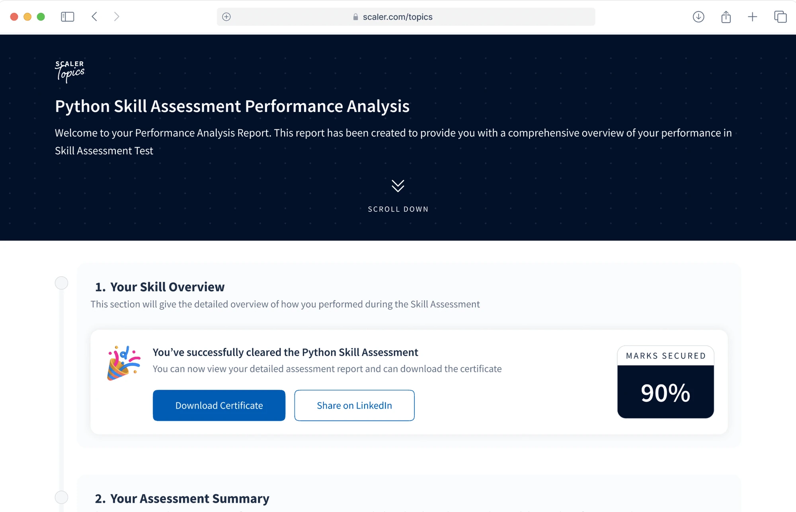

Scaler Topics / Skill Assessment
Driving course engagement through skill assessment.
A 20-day product initiative that helped learners validate their skills, understand gaps, and move from passive content consumption into relevant learning pathways.

Initial performance after the skill assessment experience launched.
Context
A large free-learning audience without a clear next step.
Scaler Topics is a free learning ecosystem spanning courses, articles, coding challenges, tools, contests, and masterclasses. It brought strong top-of-funnel acquisition, but learners often browsed passively and struggled to commit to a structured learning path.
Large audience arriving across the learning ecosystem.
Users creating an account each month.
Baseline conversion from free traffic.
Weak movement from free learning to paid programs.
The Problem
Content was available. Confidence and direction were not.
Learners could consume material, but had no reliable way to prove progress, identify gaps, or understand what to learn next. For the business, that meant weak retention and an unclear bridge from free value to premium learning.
No feedback loop after learning.
- No way to validate progress
- Unclear skill gaps and improvement areas
- No industry-recognized credential
- Difficulty comparing skills with peers
- Low motivation to continue learning
No strong bridge from free to paid.
- Only 2% signup conversion
- Low retention and time spent
- Limited visibility into user skill levels
- Weak premium value proposition
- Low conversion from free learning to payment
Research and Validation
The demand for assessment was already visible.
A survey of the existing audience validated the need and clarified what learners expected from a useful assessment experience.
of respondents expressed interest in skill assessment on the platform.
Research signal
Performance reports
Personalized scores that explain current proficiency.
Peer comparison
Ranking and benchmarks that make performance meaningful.
Recommendations
Relevant resources and courses for specific gaps.
Certification
Recognized proof that learners can share externally.
Competitive patterns that shaped the product
- High passing thresholds create exclusivity
- Detailed feedback drives engagement
- Waiting periods support return visits
- Certificate verification builds trust
Design Process
From validated need to a tracked launch in six stages.
The work moved quickly, but each stage reduced a different risk: desirability, comprehension, usability, consistency, implementation quality, and measurement.
Surveys, competitive analysis, and stakeholder interviews.
Journey maps, decision trees, and state logic.
Low-fidelity coverage of the complete assessment flow.
High-fidelity screens and a reusable component library.
Prototype testing with 15 target users and iteration.
Engineering collaboration, QA, and analytics tracking.
Experience Architecture
Assessment became a path, not a dead end.
The experience connects discovery, evaluation, feedback, and the next learning action. Every outcome gives the learner a reason to continue.
Choose a topic and understand its relevance.
Review rules, duration, attempts, and certification bar.
Complete difficulty-weighted questions within set time.
See Skill IQ, score breakdown, and peer position.
Move into resources mapped to question-level gaps.
Share verified proof after clearing the threshold.
You successfully cleared the Python Skill Assessment
The report turns a score into an explanation, a credential, and a clear learning action.
Overall performance and certification status.
Topic-level strengths and improvement areas.
Context for how the score compares.
Courses and resources tied to weak areas.
Certificate unlocked with a unique verification ID.
Key Design Decisions
Rules that balanced fairness, motivation, and business value.
Adaptive time allocation
Easy, medium, and hard questions receive 90, 300, and 360 seconds respectively, creating a fairer assessment without flattening difficulty.
High certification bar
A 90% passing score protects the value and exclusivity of the credential.
Skill IQ scoring
A benchmarkable metric makes performance easier to understand and encourages continued improvement.
Smart recommendations
Question-level feedback maps directly to relevant Scaler Topics content and courses.
Reattempt strategy
A three-day waiting period pairs recovery time with learning resources, keeping users engaged between attempts.
Certificate verification
Unique certificate IDs make successful outcomes credible to employers and useful for social proof.
Final Solution
A complete skill-assessment ecosystem.
The final product does more than score a test. It validates ability, explains performance, recommends relevant learning, and rewards mastery with verifiable proof.
Smart assessment engine
Difficulty-weighted questions and adaptive time allocation support fair evaluation.
Performance analytics
Skill IQ, peer comparison, and detailed breakdowns turn a score into insight.
Learning pathways
Question-level recommendations direct learners to courses and resources for their gaps.
Verifiable certificates
Successful learners receive credentials with unique IDs for employer verification.
7-Day Launch Performance
Early behavior showed both intent and downstream movement.
The first week showed steady discovery, meaningful test initiation, and a strong transition from assessment into recommended course pages.
Consistent traffic to skill-test listing pages.
Strong movement from page view to test initiation.
WhatsApp-eligible users showing deeper engagement.
Up from the 2% platform baseline.
Test takers who explored recommended courses.
A focused entry point for a specific skill.
Landing-to-test-submit rate.
Test-to-course landing rate.
Premium conversions per cohort.
The assessment created a credible value exchange: learners received proof and direction, while Scaler gained richer intent signals and a relevant path from free content into paid learning.
Key Learnings
What made assessment useful beyond the score.
Feedback must point somewhere.
A score alone closes the interaction. Gap-level resources and recommendations turn evaluation into continued learning.
Credentials need meaningful constraints.
A high threshold and verification system protect certificate value and make success worth sharing.
Reattempt logic can support learning.
Waiting periods work when they are paired with relevant material rather than treated as a simple lockout.
Free tools can reveal premium intent.
Assessment captures what learners want to improve, making the next course recommendation more relevant and measurable.